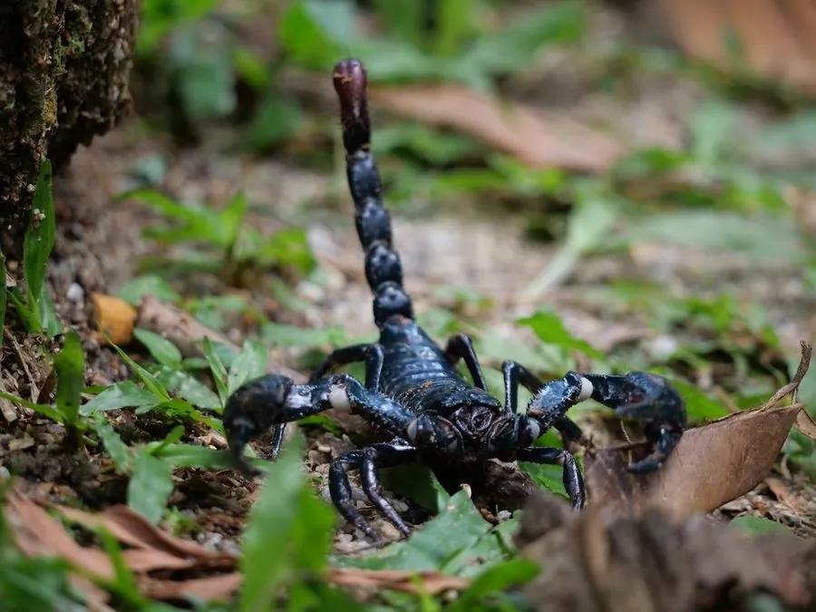

蛛形动物 · 动物界
亚洲雨林蝎 Heterometrus spinifer

东南亚雨林中的大型蝎子，体色黑亮，螯足粗壮，毒性较弱，常被当作宠物饲养，夜间在落叶层中捕食昆虫。
- 分类
- 门节肢动物门纲蛛形纲目蝎目科蝎科属雨林蝎属
- 栖息环境
- 热带雨林的落叶层、腐木下和石缝等潮湿阴暗处
- 地理分布
- 东南亚的泰国、马来西亚和印度尼西亚等地
- 保护级别
- IUCN 暂无评估；非中国原产，在中国无保护级别
物种志
亚洲雨林蝎体长 10–12 cm，体色黑亮，头胸甲和前腹板光滑，螯足粗壮，表面有颗粒和短毛；尾节较粗，毒针呈红褐色。与许多沙漠蝎相比，它的螯足更大、尾部相对较细，毒性也弱得多。
它分布于东南亚的泰国、马来西亚、印度尼西亚等地，栖息于热带雨林的落叶层、腐木下和石缝中，喜欢潮湿阴暗的环境，夜间出来捕食昆虫、蜘蛛和小型无脊椎动物。亚洲雨林蝎性情较温顺，受惊时多以螯足防御或装死，被蜇后局部疼痛红肿，一般无生命危险。它常把身体埋在落叶和腐殖土中。雌蝎产下幼蝎后会背着幼蝎生活一段时间。它是异宠市场上常见的蝎子；目前 IUCN 暂无评估，非中国原产，在中国无保护级别。
形态与习性
- 食性昆虫、蜘蛛和小型无脊椎动物
- 体长10–12 cm
- 识别体色黑亮，螯足粗壮，尾节相对较细
- 习性夜行性，喜潮湿，常埋在落叶层中
- 繁殖雌蝎产下幼蝎后背着幼蝎生活
- 毒性毒性较弱，被蜇后局部疼痛红肿
趣味知识
- 亚洲雨林蝎的螯足又大又壮，它更爱用螯足夹击而不是用毒针。
- 它喜欢潮湿的落叶层，常把身体埋进腐殖土里。
- 雌蝎产下幼蝎后，会让幼蝎爬上自己的背生活一段时间。